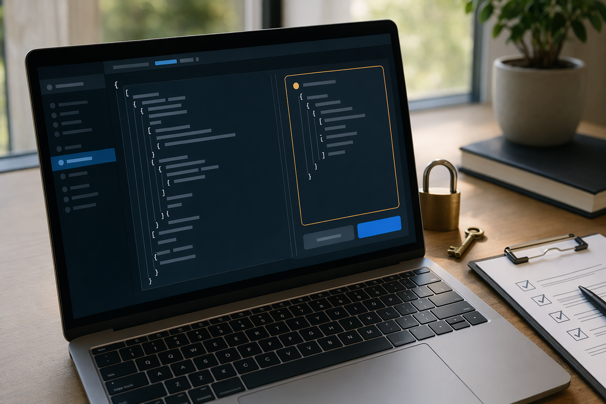

I built github.com/ytthuan/agents-system-setup because every multi-agent setup I touched dissolved into one of three failures: a single god-prompt that exhausted its context window, a security blast radius from autopilot tool calls and bulk-installed MCP servers, or a parallel mess where two subagents fought over the same files and the orchestrator silently lost work.
The plugin is the philosophy made enforceable. It is one skill that bootstraps, updates, improves, or replicates a complete multi-agent system across five supported runtimes — GitHub Copilot CLI, Claude Code, OpenAI Codex (CLI + App), OpenCode, and Gemini CLI — from a single interview, with a Canonical IR for bidirectional replication, parallel-aware orchestration, mandatory security and architecture governance, and compact-by-default context output. MIT-licensed. The rest of this article is the why.
Six axioms
The full project carries twenty-one hard rules in its
DESIGN.md. The six axioms below are how I summarize the
ones that bend the design hardest. Each card paraphrases the rule and
names what it actually prevents — because rules without consequences
are just opinions.
1 · Interview first, generate later
Project type, language, and scope drive every later decision — paths, frontmatter format, script extension, MCP boundaries. Asking later means re-doing the work.
Preventsgeneric "helper" agents with no discovery surface, silent overwrites of existing AGENTS.md
2 · Topology is mandatory
Single-agent systems collapse into a god-prompt. The minimum structure is an orchestrator plus N specialized subagents whose owned paths are machine-checkable, so routing is a glob match, not a guess.
Preventscontext-window exhaustion, runaway tool calls, two subagents fighting over the same files
3 · MCP is a gate, not a checkbox
MCP servers run code on your machine and often hold credentials. A confirmation invites yes-fatigue; a gate that renders the actual JSON the user is approving forces a real read of what is about to ship.
Preventssupply-chain compromise via a single bad MCP server, silent credential exfiltration
4 · Replicate via Canonical IR
N runtimes need 2N adapters via a Canonical Intermediate Representation, not N×(N−1) pairwise mappings. Adding a sixth runtime then costs one parser plus one emitter, not five new mapping tables.
Preventsdrift between mappings, dead code paths, lossy replications the user accepted-but-forgot
5 · Parallelism is mandatory where independent
Subagents whose owned paths do not overlap run in one wave. The orchestrator awaits all results, synthesizes, then dispatches the next wave. Sequential orchestration is the default antipattern, not the default behavior.
Preventssequential bottlenecks, hidden shared-path conflicts, wasted concurrency budget
6 · Evidence beats success-shaped summaries
Risky writes need a build, test, security, or audit trail — not just a "done" report. Every subagent reports back the commands it ran, the files it touched, and the outcomes — so the orchestrator's final summary is verifiable, not narrated.
Prevents"done" with broken builds, cosmetic rewrites that miss real risk, unauditable changes
Topology — orchestrator plus subagents
The picture below is the structural minimum. Each subagent owns a
directory pattern (for example, styles/*.css for a
visual-systems agent or scripts/script.js for an
interaction-QA agent). The orchestrator routes work by glob, the
Capability Matrix surfaces overlaps before they become bugs, and
owned paths make parallel-safety machine-decidable.
The Directory Architecture artifact in AGENTS.md is the
orchestrator's routing table. The Agent Roster is the discovery
surface — what each agent does, in one row. The Capability Matrix
surfaces overlap and gaps before they become bugs. Together they make
"who edits this file?" a deterministic question with a single answer.
The MCP approval gate

Canonical IR — replication economics
Without a Canonical Intermediate Representation, supporting N runtimes requires N × (N − 1) pairwise mappings. With IR, it is 2N — one parser plus one emitter per runtime. The economics flip the moment a fourth runtime appears: a sixth runtime adds two modules, not ten new pairwise mappings.
Successful emission is necessary but not sufficient. Round-tripping
— re-parse the emitted file back to IR, diff against the source IR
— is the only way to detect lossy mappings the user accepted
implicitly. A replication ledger (timestamp + sha256 per file) lets
improve mode flag drift later: this Claude agent
was replicated from Copilot 60 days ago and the source has changed
twice since.
Parallelism by default
Independent subagents fan out in one wave. The orchestrator awaits all results, synthesizes, then dispatches the next wave. Independence is computed automatically from the Directory Architecture: subagents whose owned paths do not overlap are parallel-safe, full stop.
The plugin makes that property part of generated agent files. Every orchestrator carries an explicit fan-out clause: parallel-safe subagents always run in one wave, multiple Task calls in a single response, then await before the next wave. Sequential orchestration is reserved for the cases where it is correct — shared paths, dependencies, or contended state — not because it was the default.
Evidence over success-shaped summaries
Risky changes need build, test, security, and audit trails — not
just "done." The plugin's quality gates are explicit and per-agent:
every subagent writes back evidence (commands run, files touched,
test results, brace counts, JSON-LD parse status, screenshot
paths), so the orchestrator's final summary is verifiable instead of
narrated. improve mode runs the same audit against
existing systems and produces a checklist of real findings with
source links and severity, not cosmetic rewrites.
The same shape applies to security-sensitive writes: MCP changes need explicit approval and a rendered diff. Frontmatter parse failures get caught by a verify pass before the user runs the system and finds nothing triggers. These are not nice-to-haves — they are how a generated agent system avoids dying quietly.
Try it
Each runtime has a different install or use mechanism. The repo ships plugin manifests where the runtime supports them; Gemini CLI support is artifact-based and does not claim a plugin install path.
GitHub Copilot CLI
copilot
> /plugin install ytthuan/agents-system-setup
> /agents-system-setupClaude Code
claude
> /plugin install ytthuan/agents-system-setup
> /agents-system-setup:agents-system-setupOpenAI Codex CLI
codex plugin marketplace add ytthuan/agents-system-setup
codex
> /plugins
> @agents-system-setupOpenCode (clone-and-copy)
git clone https://github.com/ytthuan/agents-system-setup.git
cd agents-system-setup
./scripts/install-opencode.sh projectGemini CLI (artifact-first)
# No plugin install command is claimed.
# After generated artifacts land:
# .gemini/agents/<agent-name>.md
# call them in Gemini with: @<agent-name>Agents are products, not prompts
A script becomes a system when topology, governance, and evidence are first-class — when the next person can read the routing table, audit the MCP boundary, replicate the setup to another runtime, and prove that "done" actually built and passed. That is the bar I set for the plugin, and it is the bar I think any production multi-agent setup should be held to.
If you run agent fleets and any of this resonates, the source is public and contributions are welcome. It is MIT-licensed. PRs welcome.